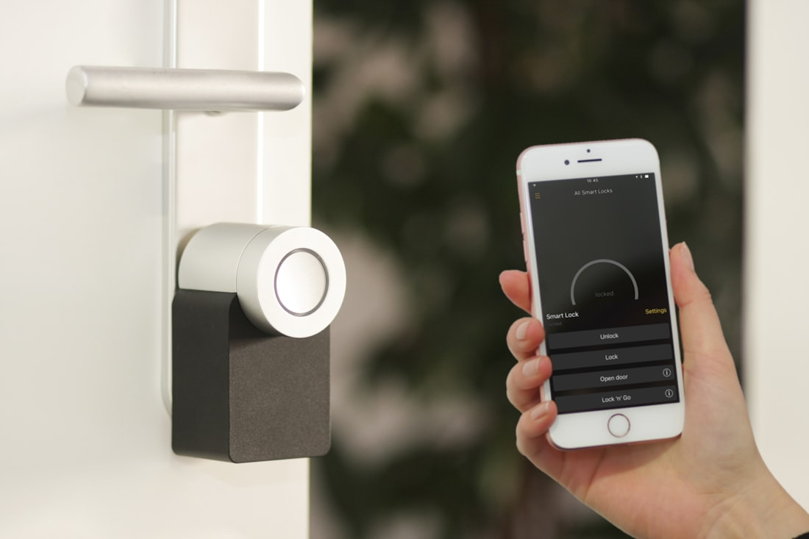

Sudah DibangunAccess Control Pintu — RFID & PIN
Sistem kontrol akses pintu dengan kartu RFID atau kode PIN yang membuka kunci elektrik, mencatat siapa & kapan masuk, dan dapat dipantau dari jarak jauh. Cocok untuk ruang server, lab, gudang, atau pintu kantor.
RFID / PIN
Kunci Elektrik
Log Akses